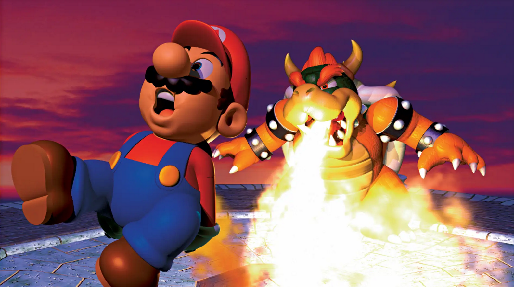

Super Mario 64
Nintendo - 1996

Showcasing some of the best, most fun and most influential polygonal video games.
Enter the era where polygons reigned supreme and gaming took its first true steps into the third dimension. The fifth generation brought us iconic systems like the PlayStation, Nintendo 64, and Sega Saturn, each pushing the boundaries of what was possible in interactive entertainment.
Here, we explore the pioneers of 3D gaming—the early experiments, the groundbreaking successes, and the cult classics that defined a new age. From blocky landscapes to unforgettable adventures, this is where the foundation of modern gaming was laid.
Nintendo - 1996

Super Mario 64 is a groundbreaking 3D platformer that redefined the genre, bringing Mario into a fully explorable world for the first time. As Mario, players journey through Princess Peach’s castle, leaping into magical paintings to explore diverse worlds filled with platforming challenges, puzzles, and enemies.
Tasked with collecting Power Stars to defeat Bowser and rescue the princess, Mario utilizes a fluid and dynamic moveset, including triple jumps, wall kicks, and long jumps, all within expansive, open-ended levels. With its revolutionary camera system, precise controls, and imaginative level design, Super Mario 64 set the standard for 3D platforming and remains one of the most influential games of all time.